In diesem Bereich siehst du die gängigsten Abzeichen in der Schweizer Armee. Die Abzeichen werden in das
Dienstbüchlein eingetragen und können in Form eines Ribbons auf dem Tenue A getragen werden. Diese Seite
soll dir nur einen
Überblick geben. Für weitere Informationen zu den einzelnen Abzeichen kannst du gerne die offizielle Seite
des Bundes besuchen: vtg.admin.ch
Oder
lade folgende PDF-Datei herunter: Reglement Abzeichen der Schweizer
Armee
Diese Abzeichen kannst du in der Rekrutenschule durch einmaliges erfüllen der Kriterien erhalten. Diese Abzeichen kann man als Soldat all holen.
| Abzeichen | Ribbon | Anforderungen |
|---|---|---|
| Militärsport Stufe 1 | 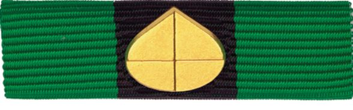 | mindestes 80 Sportpunkte beim FTA-5 Test |
| Selbst- und Kameradenhilfe / ABC Abwehr | 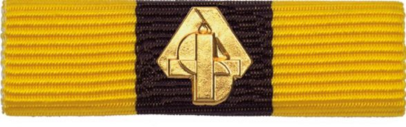 | Theorie und praktischer Teil zur ABC-Abwehr und San-Dienst |
| Sturmgewehr Stufe 1 | 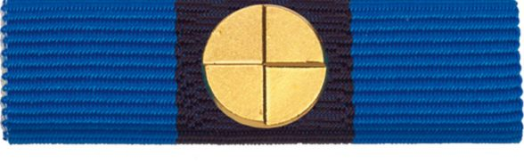 | mindestens 72 Punkte im Wettschiessen und keine Nuller |
| Dienstleistungsabzeichen für 90 Diensttage | 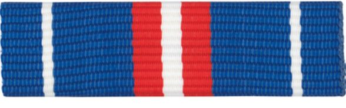 | Ab 90 Diensttage |
| Dienstleistungsabzeichen für 170 Diensttage | 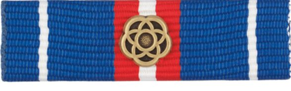 | Ab 170 Diensttage |
| Dienstleistungsabzeichen für 250 Diensttage | 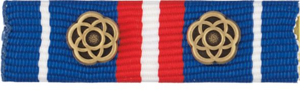 | Ab 250 Diensttage |
Gewisse dieser Abzeichen kann man nur als Kader erhalten, da man als Soldat keine Möglichkeit hat, die Prüfungen genügend oft zu absolvieren (höhere Stuffen der Grundlagenabzeichen) bzw. weil man die Prüfungen nicht macht(Pistole).
| Abzeichen | Ribbon | Anforderungen |
|---|---|---|
| Militärsport Stufe 2 | 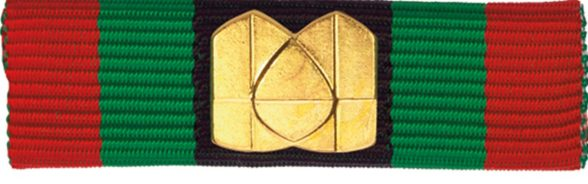 | Militärsport Stufe 1 drei Mal geschafft bzw. drei Mal mindestens 80 Punkte im FTA-5 Sport-Test |
| Sturmgewehr Stufe 2 | 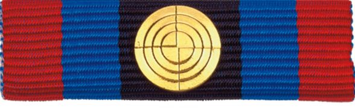 | Sturmgewehr Stufe 1 zwei Mal geschafft bzw. zwei Mal mindestens 72 Punkte ohne Nuller im Wettschiessen erreicht |
| Pistole Stufe 1 | 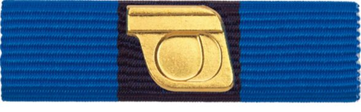 | Pistolen Wettschiessen geschafft |
| Pistole Stufe 2 | 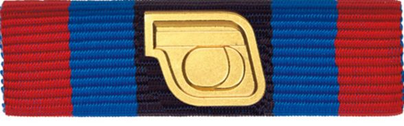 | Pistole Stufe 1 zwei Mal erreicht |
| Dienstleistungsabzeichen für 350 Diensttage | 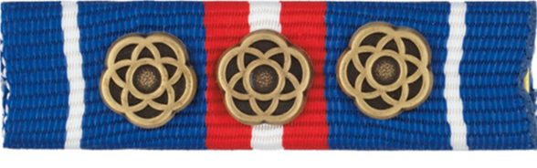 | Ab 350 Diensttage |
| Dienstleistungsabzeichen für 450 Diensttage | 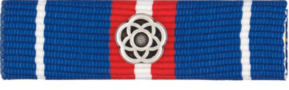 | Ab 450 Diensttage |